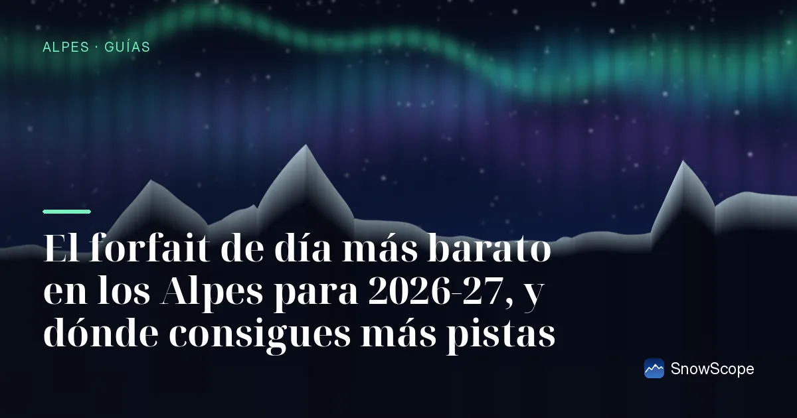
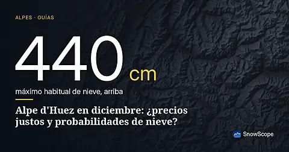

El forfait de día más barato en los Alpes para 2026-27, y dónde consigues más pistas
El precio de día más bajo en los Alpes no siempre es la mejor oferta. Les Karellis cobra 36 EUR por un día de adulto, el más barato que hemos encontrado, pero por 58 EUR Alpe d'Huez abre 163 km de pistas, casi cuatro veces más esquí. Así se comparan nueve estaciones económicas si tienes en cuenta la montaña que consigues.
Consulta la previsión de nieve en tiempo real de Les Karellis en la app SnowScopeEspesor de nieve, alertas de nieve polvo y mapa 3D, gratis.
Nueve forfaits de día de 36 a 60 EUR
Al final de la lista de precios hay dos pequeñas estaciones francesas: Les Karellis a 36 EUR para el invierno 2026-27 y Puy-Saint-Vincent a 44 EUR. Eslovenia sigue con Krvavec a 47 EUR en su tarifa estándar y Vogel a 49 EUR.
Luego vienen los dominios más grandes. Valloire-Valmeinier pide 54,9 EUR por el dominio Galibier-Thabor, Galtür 55,5 EUR en temporada baja, Alpe d'Huez desde 58 EUR, Vars-Risoul 58 EUR por la Forêt Blanche, y Pila, sobre Aosta, mantiene un precio fijo de 60 EUR toda la temporada.
Kilómetros de pistas: el descuento oculto
Hemos contado las pistas que tenemos cartografiadas de cada estación. Alpe d'Huez lidera con 163 km, luego Valloire-Valmeinier y Vars-Risoul con 131 km cada una. Para un esquiador fuerte que quiere recorrer terreno, estas tres son la verdadera ganga: unos pocos euros más que las estaciones pequeñas, el triple de terreno.
Pila tiene 56 km, Les Karellis 45 km y Puy-Saint-Vincent 42 km, buenas para un día tranquilo o en familia. Galtür tiene 27 km, mientras que Krvavec y Vogel tienen 16 km cada una: bien para una mañana, poco para un día completo de esquí rápido.
¿Habrá nieve?
Nuestro histórico de nieve de 46 inviernos pasados da la otra mitad de la respuesta. A media montaña, un diciembre normal trae 67 cm en Valloire-Valmeinier, 65 cm en Les Karellis, 62 cm en Alpe d'Huez, 59 cm en Galtür, 53 cm en Puy-Saint-Vincent, 48 cm en Vars-Risoul y 44 cm en Pila. Krvavec y Vogel suelen tener solo 10 cm y 6 cm.
Contando las semanas con al menos 50 cm en 9 de cada 10 inviernos, Valloire-Valmeinier y Les Karellis tienen 19, Alpe d'Huez y Galtür 18, Puy-Saint-Vincent, Vars-Risoul y Pila 14, y las dos estaciones eslovenas ninguna. Los grandes dominios franceses son a la vez baratos y fiables.
El mejor día para cada tipo de esquiador
Con presupuesto ajustado: Les Karellis, 36 EUR con una nieve con la que normalmente puedes contar. Para el máximo esquí por euro: Valloire-Valmeinier, la mejor combinación de precio, tamaño y nieve de esta lista. Para un gran día con pistas famosas: Alpe d'Huez desde 58 EUR, con remontes que suben hasta 3306 m.
Las familias que se quedan en un solo sitio pueden ahorrar en Puy-Saint-Vincent. Krvavec y Vogel merecen la pena solo si estás cerca, por ejemplo desde Liubliana, y después de una buena nevada.
Los principiantes no necesitan un dominio grande: una estación más pequeña con pistas suaves cerca del pueblo y un forfait más barato suele ser el mejor día. Los esquiadores expertos sacan mucho más partido a los grandes dominios franceses, donde un solo forfait conecta varios valles y las pistas largas te alejan de las multitudes.
Haz el fin de semana más barato
Los precios de salida como el de Alpe d'Huez suben en las fechas con más demanda, así que compra online lo antes posible. Dormir en el valle o en un pueblo cercano suele ser mucho más barato que a pie de pistas: Risoul o Vars para la Forêt Blanche, los pueblos de la Maurienne para Valloire y Les Karellis.
El mapa de este artículo muestra alojamientos por debajo de 120 EUR la noche para el fin de semana del 11 al 13 de diciembre de 2026 cerca de nuestras cuatro elecciones. Comprueba la web de la estación antes de ir: las fechas de apertura dependen de la nieve.
Consejos para esquiadores
- Día más barato: Les Karellis, 36 EUR.
- Más pistas por el dinero: Valloire-Valmeinier, 54,9 EUR por 131 km, o Alpe d'Huez desde 58 EUR por 163 km.
- Forfaits de día eslovenos: solo después de una buena nevada.
- Compra online con antelación: los precios de salida suben en los días de más demanda.
Más mapas (sitios externos)
Referencias y créditos
- Les Karellis, official prices 2026-2027 www.leskarellis.com/fr/tarifs-2026-2027-sans-lien
- Puy-Saint-Vincent, official ski pass prices 2026-27 www.puysaintvincent.com/forfait-ski-puy-saint-vincent
- Krvavec: official lift-pass prices (2026-27), checked 13 November 2026 rtc-krvavec.si/cenik-urnik
- Vogel: official lift-pass prices (2026-27), checked 13 November 2026 vogel.si/cenik-zima/
- Valloire, official ski pass shop (Galibier-Thabor), winter 2026-27 skipass.valloire.com/fr/
- Galtür: official lift-pass prices (2026-27), checked 13 November 2026 www.galtuer.com/en/winter/operating-times-prices/skipass-prices-silvapark
- Alpe d'Huez, official ski pass shop, winter 2026-27 skipass.alpedhuez.com/hiver/
- Risoul, official ski pass page, Forêt Blanche 2026-27 risoul.labellemontagne.com/fr/hiver/forfaits/risoul-foret-blanche/
- Pila, official daily ski pass prices 2026-27 pila.it/en/skipass-pila/daily-skipass/
Sobre estas cifras
Cifras de nieve: histórico de nieve de SnowScope, 46 inviernos pasados (1980-81 a 2025-26) a tres alturas de la estación, un modelo del pasado corregido por altitud (una estimación para una zona, no partes de la estación). Remontes, pistas y acceso: las fuentes de abajo, comprobadas en la fecha indicada.
Citar este informe
Para investigación, docencia o prensa: cifras y gráficos reutilizables libremente bajo CC BY 4.0 con esta cita.
SnowScope (2026), El forfait de día más barato en los Alpes para 2026-27, y dónde consigues más pistas, https://snowscope.app/blog/es/2026/11/cheapest-ski-day-pass-alps-2026-27-most-runs-for-your-money.html, consultado el 2026-11-19
SnowScope (Atlas Labs). (2026, November 19). El forfait de día más barato en los Alpes para 2026-27, y dónde consigues más pistas. SnowScope snow reports. https://snowscope.app/blog/es/2026/11/cheapest-ski-day-pass-alps-2026-27-most-runs-for-your-money.html
BibTeX
@misc{snowscope2026cheapestskidaypassalps20,
author = {{SnowScope (Atlas Labs)}},
title = {El forfait de día más barato en los Alpes para 2026-27, y dónde consigues más pistas},
year = {2026},
month = nov,
howpublished = {\url{https://snowscope.app/blog/es/2026/11/cheapest-ski-day-pass-alps-2026-27-most-runs-for-your-money.html}},
note = {Published 2026-11-19 15:21 UTC; accessed 2026-11-19}
}· CC BY 4.0 · Métodos, datos y herramientas →
Les Karellis: nieve y temperatura según la altura, este invierno vs el pasado (herramientas) →
Sigue Les Karellis
Gratis: un aviso cuando llega la nieve y la previsión cada mañana.
Más partes de nieve

Valloire-Valmeinier ofrece 131 km de pistas y un 98 % de probabilidad de tener 30 cm de nieve a media montaña a mediados de diciembre.

Pila, sobre Aosta, combina un forfait de día a un precio fijo de 60,00 EUR con una nieve de diciembre fiable en sus cotas altas.

¿Vale la pena Alpe d'Huez para diciembre de 2026? Comprobamos las probabilidades de nieve, el precio inicial de 58,00 EUR y lo comparamos con Les 2 Alpes.